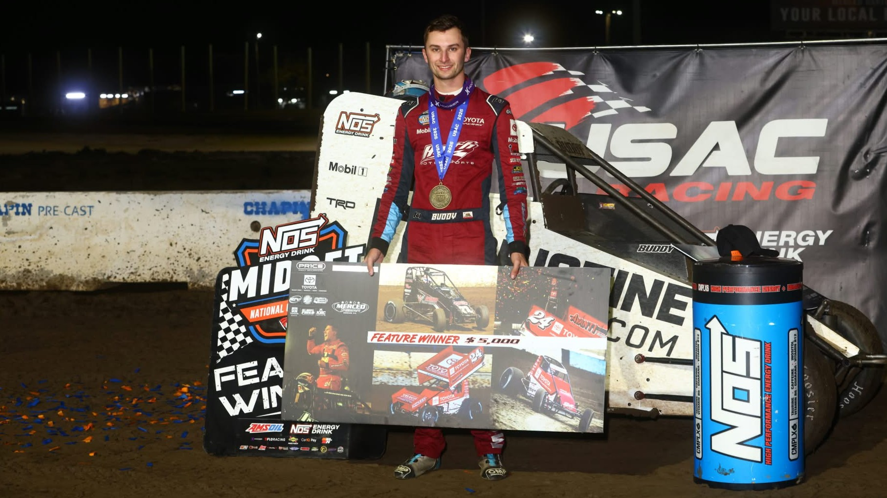

Buddy Kofoid Wins Chase Johnson Classic USAC Midget Feature at Merced
Kofoid started sixth and passed CB Industries teammate Justin Grant with four laps left after Grant’s car got a flat right front tire. It was Kofoid’s first series start for CBI.

Buddy Kofoid won the 30-lap Chase Johnson Classic USAC NOS Energy Drink Midget National Championship feature at Merced Speedway in Merced, California, on Saturday, Nov. 21, according to USAC. He started sixth and took the lead with four laps left. The race ran without a caution in 6:26.895 on the quarter-mile dirt oval, and Kofoid won by 0.717 seconds. USAC said it was Kofoid’s first series start for the CB Industries team. His first 25 series wins came with Keith Kunz/Curb-Agajanian Motorsports between 2020 and 2025.
Kofoid’s CBI teammate Justin Grant led laps 2 through 26, according to the official lap leaders. USAC said Grant’s car bounced through turns one and two on lap 27 and landed with a flat right front tire. Kofoid passed him on the inside off turn two, and Grant fell to seventh. Jett Yantis started 10th and finished second, the best career USAC National Midget result for both Yantis and Beilman Motorsports, USAC said. Daison Pursley was third, Tanner Carrick fourth and polesitter Kale Drake, who led the first lap, fifth. Jacob Denney, Grant, Gavin Miller, Broedy Graham and Jakeb Boxell completed the top 10 in the 25-car field.
Kofoid also set fast time at 11.997 seconds. According to USAC, he then won a wheelchair race among six drivers that set the lineup for the six-lap Chase for Cash Dash, and he won the dash in a track-record 1:13.227. USAC said the feature paid $5,000 to win. It was his 26th career USAC National Midget feature win, which moved him alone into 18th on the series’ all-time win list, and it made him Merced Speedway’s first three-time USAC National Midget feature winner.
“But I’m glad to still be in position to take advantage of that and get a win during my first night out with Chad (Boat) and CBI,” Kofoid said, according to USAC.
Denney leads the USAC National Midget standings with 1,191 points, ahead of Kevin Thomas Jr. with 1,086 and Grant with 1,067, according to USAC. The series is next scheduled to race Monday, Nov. 23, at Plaza Park Raceway in Visalia, California.